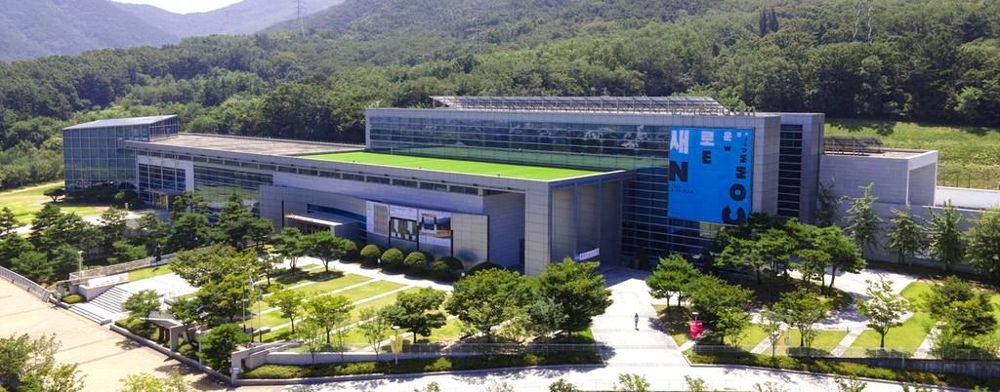

대구미술관은
2011년 5월 26일에
개관하였습니다.
규모
대지면적 71,202㎡/건축면적 8,807.27㎡/연면적 21,701.44㎡
건물구성
지하 1층:수장고, 기계설비실
지상 1층: 1전시실, 어미홀, 강당, 사무공간
지하 2층: 2-5전시실, 선큰가든
지하 3층: 미술정보센터, 뷰라운지
직제
지하 1층:수장고, 기계설비실
위치
대구시 수성구 미술관로 40(삼덕동 374)
전화
053-803-7900
대구와 세계,
현재와 미래를 품는
대구미술관
수집연구 역량강화
- 전략적 작품 수집과 보존,관리
- 소장품 국내의 네트워크 형성
- 대구미술사 정립을 위한 아카이브 구축
전문적, 체계적 전시기획
- 지속 가능한 체계적 전시기획 역량 제고
- 학예 역량 강화 및 글로벌 교류 활성화
- 대구미술 발전을 위한 창작지원 강화
평생교육을 실현하는 미술관 교육
- 관람객의 눈높이에 맞는 맞춤형 교육 제공
- 대상별, 연령별 다양한 교육 프로그램 운영
- 참여하고 즐기는 열린 미술관
관람객 친화 서비스 강화
- 온,오프라인 홍보 채널 다양화
- 다각적인 마케팅으로 관람객 증대
- 안전하고 쾌적한 관람 환경 조성